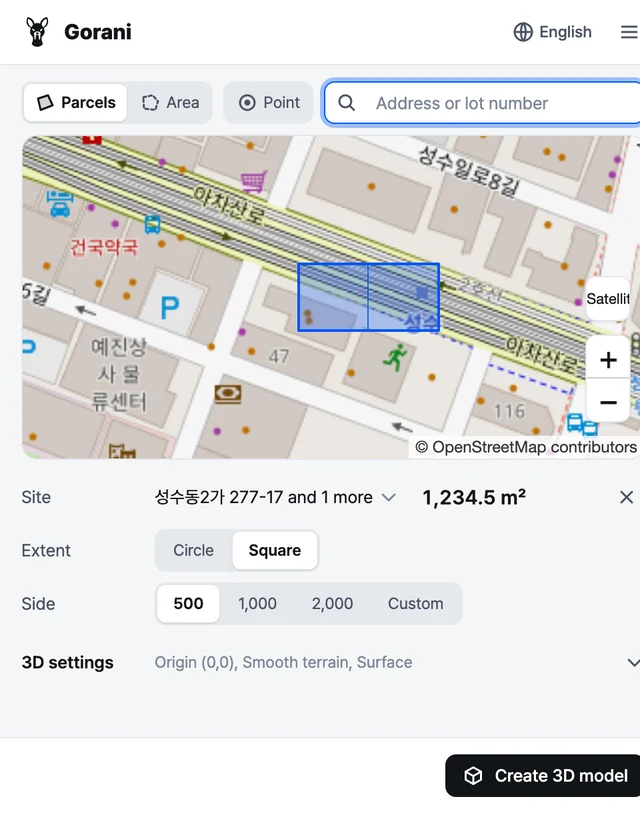
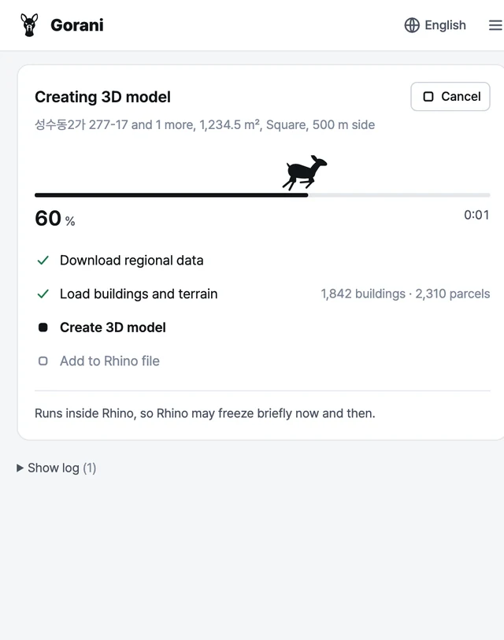
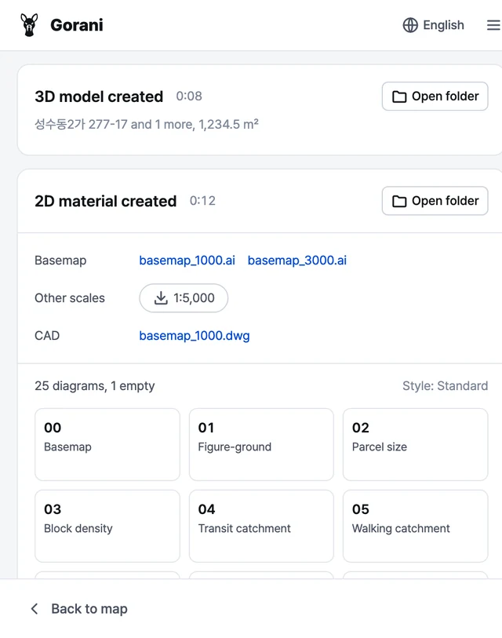

対象地の3Dモデリングと分析
対象地を選ぶと、3D地形と2D分析資料を作成します。Rhino、SketchUp、Blenderで使える無料プラグインです。
学生のころに自分の作業を楽にするために作ったツールを、整えて公開しました。
- Rhino 8
- SketchUp 2022以降
- Blender 4.2以降
- Windows、macOS
インストール
-
パッケージマネージャーを開く
Rhinoのコマンドラインに入力します
PackageManager -
Goraniをインストール
Goraniを検索してインストールを押します
-
Rhinoを再起動
再起動するとプラグインが読み込まれます。
-
パネルを開く
コマンドラインに入力します
Gorani
-
Extension Warehouseを開く
メニュー 拡張機能 > Extension Warehouse
-
Goraniをインストール
Goraniを検索してインストールを押します
-
パネルを開く
メニュー 拡張機能 > Gorani、またはツールバーのgoraniボタン
-
Get Extensionsを開く
メニュー Edit > Preferences > Get Extensions。初回はオンラインアクセスを許可します。
-
Goraniをインストール
Goraniを検索してInstallを押します
-
パネルを開く
3DビューでNキーを押し、サイドバーのGorani > パネルを開くを選びます。パネルはブラウザのタブで開きます。
初めての地域では、データのダウンロードに少し時間がかかります。問題があればGitHub Issuesにお知らせください。
使い方
パネルはモデリング画面の横に開きます。まずは既定のオプションのままで構いません。
英語、韓国語、スペイン語、日本語、簡体字中国語に対応しています。上部の地球儀ボタンで切り替えます。
-

1対象地と範囲の選択
地図で区画をクリックするか、エリアを描いて範囲を決めます。住所や地番で検索できます。韓国は全国の地籍・用途地域・等高線のデータを使います。日本では、建物は国土交通省PLATEAU（実測の高さと用途）、地形は国土地理院（GSI）の標高タイル、道路はOpenStreetMapを使います。その他の地域はOpenStreetMapのデータを使います。
-

23Dモデル作成
建物、道路、地形、水系が、開いているドキュメントにレイヤー別に入ります。建物の高さは階数から決めます。
-

32D資料作成
ベースマップ（.ai）、現況図と分析図、調書（CSV）が、結果フォルダ
result/対象地_日付/内の2D/に保存されます。